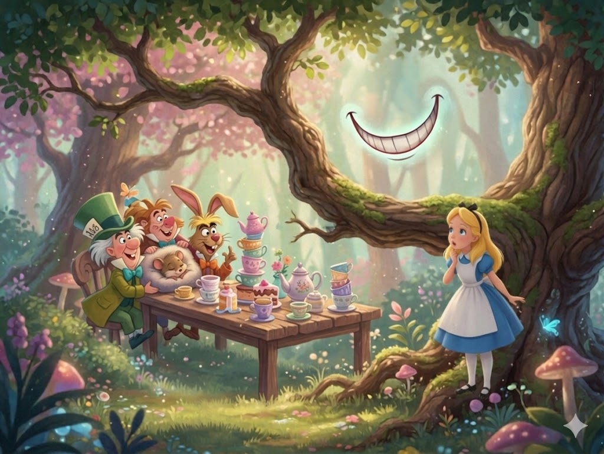
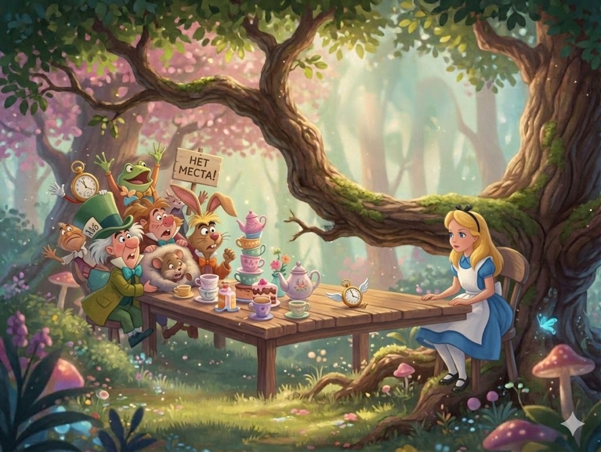
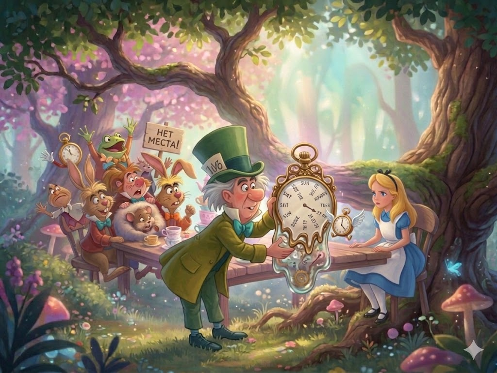
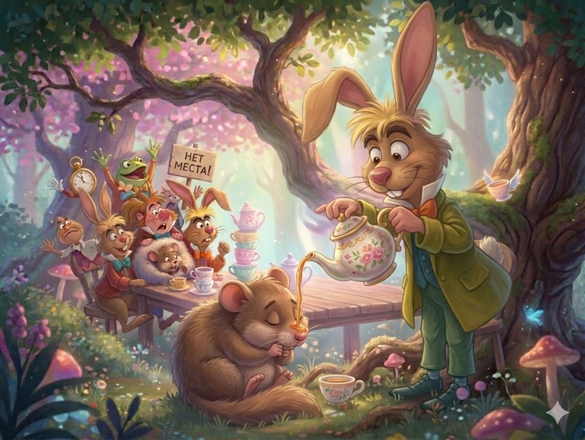
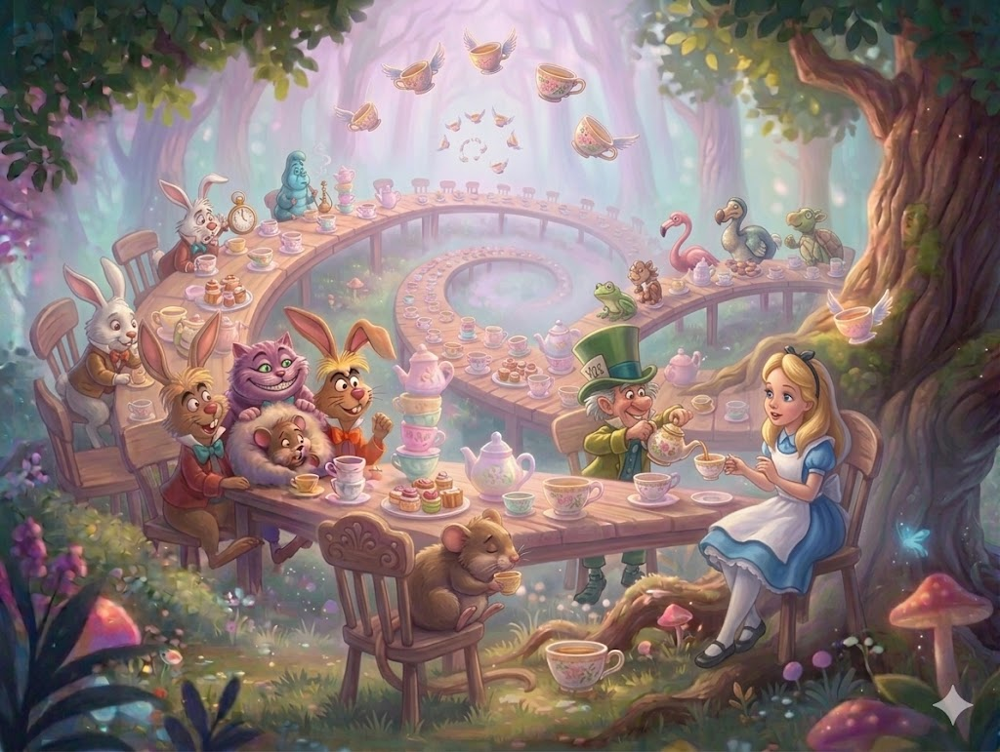

Przed domem, w cieniu drzew ustawiony był stół, przy którym siedzieli Szarak Bez Piątej Klepki i Zwariowany Kapelusznik. Pomiędzy nimi, na wpół uśpiony, kiwał się Suseł, na którym opierali się łokciami jak na poduszce, prowadząc rozmowę ponad jego głową. Alicja pomyślała, że musi to dla Susła być bardzo niewygodne. Chociaż może nie czuje tego wcale śpiąc tak mocno?

Stół był duży, ale wszyscy trzej siedzieli stłoczeni w jednym rogu. Kiedy spostrzegli zbliżającą się Alicję, zawołali:
- Nie ma miejsca! Nie ma miejsca!
- Właśnie, że jest mnóstwo miejsca! - odpowiedziała z oburzeniem Alicja, po czym usiadła na wygodnym fotelu przy drugim końcu stołu.
- Proszę, poczęstuj się winem - rzekł bardzo grzecznie Szarak Bez Piątej Klepki.

Alicja spojrzała na stół, ale nie zauważyła na nim nic prócz herbaty. Powiedziała więc:
- Nie widzę tu żadnego wina.
- Bo go wcale nie ma - rzekł Szarak.
- Wobec tego częstowanie mnie winem nie było z pańskiej strony zbyt uprzejme.
- Przysiadanie się tutaj bez zaproszenia nie było zbyt uprzejme z twojej strony.
- Nie wiedziałam, że to pana stół. Jest nakryty na znacznie więcej niż trzy osoby.
- Powinnaś ostrzyć sobie włosy - odezwał się nagle Zwariowany Kapelusznik. Przypatrywał się Alicji już od dłuższego czasu z wielką ciekawością i teraz zabrał głos po raz pierwszy.
- Powinien pan oduczyć się robienia przycinków - rzekła surowo Alicja - to jest bardzo niegrzeczne. Na to Kapelusznik otworzył oczy jeszcze szerzej i zapytał:
- Jaka jest różnica miedzy kciukiem a piórnikiem?
Alicja pomyślała z radością, że zanosi się wreszcie na jakąż zabawę. Rzekła więc:
- Sądzę, że będę umiała rozwiązać tę zagadkę.
- Myślisz, że potrafisz znaleźć odpowiedź na to pytanie? - rzekł Kapelusznik.
- Właśnie.
- No to mów, co myślisz.
- Ja... ja myślę to, co mówię, a to jest właściwie to samo, proszę pana.
- Wcale nie. W ten sposób mogłabyś powiedzieć, że "widzę to, co jem" i "jem to, co widzę" mają to samo znaczenie.
- Mogłabyś także powiedzieć - niespodziewanie odezwał się zaspanym głosem Suseł - że "oddycham, kiedy śpię" ma to samo znaczenie, co "śpię, kiedy oddycham".
- Właśnie tak ma się rzecz z tobą - rzekł Zwariowany Kapelusznik i rozmowa urwała się nagle jak ucięta nożem. Przez parę minut panowała cisza, w czasie której Alicja przypomniała sobie wszystko, co tylko wiedziała, o krukach i piórnikach.
Pierwszy przerwał milczenie Zwariowany Kapelusznik pytaniem: - Którego dziś mamy? - zwróconym do Alicji. Jednocześnie wyjął z kieszeni kamizelki zegarek i potrząsnął nim na wszystkie strony, przykładając go czasem do ucha.

Alicja pomyślała chwilę, po czym odpowiedziała:
- Czwartego.
- Spóźnia się o dwa dni - westchnął Kapelusznik. A nie mówiłem ci, że masło nie nadaje się do smarowania mechanizmów? - dodał patrząc ze złością na Szaraka.
- To było najlepsze masło - odpowiedział potulnie Szarak.
- Tak, tak, ale mogły dostać się do środka jakieś okruchy. Wsadzałeś tam przecież to masło nożem od chleba.
Szarak wziął zegarek i przyglądał mu się przez dłuższą chwilę, po czym wrzucił go do swej herbaty, zajrzał do środka i powtórzył tym samym tonem:
- To było najlepsze masło.
Alicja przypatrywała się temu wszystkiemu z wielkim zainteresowaniem. Wreszcie zawołała:
- Cóż to za dziwny zegarek, który wskazuje dni, a nie godziny, minuty i sekundy!
- No to co z tego? - zapytał Kapelusznik. - A czy twój zegarek wskazuje lata?
- Oczywiście, że nie. Bo... bo... on stoi przecież na jednym dniu roku tak strasznie długo!
- Tak samo jest z moim zegarkiem - rzekł Zwariowany Kapelusznik.
Alicja była nie na żarty zaniepokojona. Ostatnie zdanie Kapelusznika wydawało się już zupełnie niezrozumiałem, choć wypowiedziane było niewątpliwie po angielsku. Rzekła więc najuprzejmiej w świecie:
- Niezupełnie rozumiem, co pan ma na myśli.
- Suseł znowu zasnął - rzekł Kapelusznik i wylał Susłowi na nos trochę gorącej herbaty.
Śpioch potrząsnął gwałtownie głową i powiedział nie otwierając oczu:

- Oczywiście, rzecz jasna. Chciałem właśnie to samo powiedzieć.
- Czy znalazłeś już rozwiązanie zagadki? - zapytał Kapelusznik zwracając się do Alicji.
- Nie. A jaka jest właściwie odpowiedź?
- Nie mam najmniejszego pojęcia - odparł Kapelusznik.
- Ani ja - dorzucił Szarak.
Alicja westchnęła ciężko i po chwili odezwała się:
- Wydaje mi się, że moglibyście spędzać czas pożyteczniej niż na wymyślaniu zagadek, które nie mają rozwiązania.
- Gdybyś znała Czas tak dobrze jak my, nie mówiłabyś tego - rzekł Kapelusznik.
- Nie wiem, co pan ma na myśli.
- Oczywiście, że nie wiesz. - Tu Kapelusznik przybrał pogardliwy wyraz twarzy. - Jestem pewien, że nawet nigdy nie rozmawiałaś z Czasem.
- Chyba nie - odparła Alicja - ale za to często zabijam czas grą na fortepianie.
- W tym właśnie sęk - rzekł Kapelusznik, że Czas nie znosi, aby go zabijano. Gdybyś była z nim w dobrych stosunkach, zrobiłby dla ciebie z twoim zegarem wszystko, co byś tylko chciała. Dam ci przykład: przypuśćmy, że jest godzina dziewiąta rano i mają się rozpocząć lekcje. Szepczesz słóweczko i już wskazówki pędzą po tarczy jak oszalałe! Po chwili jest godzina wpół do drugiej i idziesz sobie po skończonych lekcjach na obiad do domu.
- To byłoby naprawdę wspaniałe - rzekła Alicja z głębokim namysłem. - Tylko, widzi pan, nie byłabym wtedy dość głodna.
- To tylko z początku - odparł Kapelusznik. Później mogłabyś po prostu zatrzymać Czas na godzinie wpół do drugiej, dopóki nie nabrałabyś apetytu.
- Czy pan postępuje właśnie w taki sposób? - zapytała Alicja.
Kapelusznik zaprzeczał z wielce posępną miną, po czym dodał:
- W zeszłym roku pokłóciłem się z Czasem na koncercie urządzonym prze Królową Kier. Było to na krótko, zanim on zwariował - tu wskazał łyżeczką od herbaty na Szaraka Bez Piątej Klepki. - Miałem wtedy recytować wierszyk:
Jasne słoniątko późno dziś wstało,
Zagrać na trąbie czasu nie miało.
- Znasz to może?
- Zdaje się, że słyszałam kiedyś coś podobnego.
- Pamiętasz zatem, jak to idzie dalej?
Więc zbierają zewsząd gromadnie,
Za chwilę pewnie zatrąbi ładnie.
Ożywi wszystkie niedźwiedzie w lesie,
Znużone główki susłów podniesie.
Więc chociaż w domu pęka ci głowa,
Jakże jest piękna ta pieśń słoniowa.
Tu Suseł wstrząsnął się nagle i zaczął śpiewać przez sen: Niowasło, niowasło, niowasło, niowasło... - tak długo, dopóki szczypaniem nie zmuszono go do umilknięcia.
- Ledwo skończyłem pierwszą zwrotkę - rzekł Kapelusznik, kiedy Królowa wrzasnęła na całe gardło: "On zabija Czas! Ściąć go natychmiast!"
- Jakie to strasznie dzikie! - westchnęła Alicja.
- ...I od tej chwili - ciągnął dalej Kapelusznik - Czas odmówił mi posłuszeństwa. Dla mnie teraz jest już zawsze szósta.
Alicja doznała nagłego olśnienia.
- Więc to dlatego siedzicie zawsze przy podwieczorku? - zapytała.
- Oczywiście. Nasz podwieczorek trwa wiecznie, tak że nie mamy czasu na zmywanie naczyń.

- I przesuwacie się ku coraz dalszym nakryciom?
- Rzecz jasna. W miarę brudzenia naczyń!
- Ale co się dzieje wówczas, gdy wracacie do pierwszego nakrycia?
- Zmieńmy temat rozmowy - rzekł Szarak szeroko ziewając. - Zaczyna mnie to już nudzić. Proponuję, aby ona coś na opowiedziała.
- Obawiam się, że nie mam nic ciekawego do opowiedzenia - rzekła szybko Alicja nie na żarty przestraszona tą propozycją.
- To niech Suseł coś nam opowie! - krzyknęli chórem Szarak Bez Piątej Klepki i Zwariowany Kapelusznik. - Halo! Zbudź się natychmiast! - To mówiąc zaczęli szczypać Susła jednocześnie z obu stron.
Suseł otworzył oczy i rzekł:
- Ja wcale nie spałem. Słyszałem każde wasze słowo.
- Opowiedz nam coś - nalegał Szarak.
- Tak, tak, bardzo proszę o jakąś ciekawą historię - poparła go Alicja.
- Gadaj szybko - dodał Kapelusznik - bo w przeciwnym razie zaśniesz w czasie opowiadania.
- Pewnego razu żyły na świecie trzy siostry - zaczął Suseł bardzo szybko. - Nazywały się Kasia, Jasia i Basia i mieszkały na dnie studni.
- A czym się żywiły? - zapytała Alicja, którą te sprawy najbardziej interesowały.
- Żywiły się syropem - odparł Suseł po parominutowym namyśle.
- Nie mogły chyba żywić się samym syropem - sprzeciwiła się Alicja. - Bo byłyby na pewno chore.
- Istotnie - rzekł Suseł. - One były chore. Bardzo chore.
Alicja usiłowała wyobrazić sobie przedziwny tryb życia trzech sióstr, ale nie bardzo jej się to udawało. Zapytała więc z wielkim zaciekawieniem:
- Ale dlaczego mieszkały na dnie studni?
- Nalej sobie więcej herbaty - rzekł z wielką powagą Szarak.?
- Jeszcze w ogóle nie piłam - odparła Alicja urażona tą propozycją. - Trudno więc, abym nalała sobie więcej.
- Chciałaś powiedzieć, że trudno, abyś nalała sobie mniej - wtrącił się Kapelusznik. - Przecież znacznie łatwiej jest nalać sobie więcej niż nic.
- Nikt nie pytał pana o zdanie - rzekła gniewnie Alicja.
- Aha, a kto teraz robi przecinki? - zawołał triumfalnie Kapelusznik.
Alicja nie bardzo wiedziała, co odpowiedzieć. Nalała więc sobie herbaty i wzięła chleba z masłem, po czym powtórzyła swe pytanie:
- Dlaczego siostry mieszkały na dnie studni?
Suseł namyślił się znów parę minut, aż wreszcie rzekł:
- Była to studnia napełniona syropem.
- Nic takiego w ogóle nie istnieje - zaczęła Alicja, ale Szarak i Kapelusznik przerwali jej:
- Pst! - Suseł zaś rzekł z wyraźnym oburzeniem:
- Jeśli nie potrafisz zachować się przyzwoicie, to dokończ sobie sama.
- Nie, proszę opowiadać dalej - powiedziała pokornie Alicja. - Ja już na pewno panu nie przerwę. Być może, iż taka studnia istnieje.
- "Być może?"... - powtórzył z oburzeniem Suseł. Po chwili zaś ciągnął dalej. - Te trzy siostrzyczki uczyły się tam rysować.
- A co one rysowały? - zapytała Alicja, całkiem zapominając o swym przyrzeczeniu.
- Syrop - odparł bez chwili namysłu Suseł.
- Chciałabym czystą filiżankę - rzekł Kapelusznik. - Przesuńmy się wszyscy o jedno miejsce.
To mówiąc Kapelusznik przesiadł się. Suseł zajął jego miejsce, Szarak miejsce Susła, Alicji zaś przypadło w udziale miejsce Szaraka. Jedynie Kapelusznik zyskał na tej zamianie. Alicja wyszła na niej bardzo źle, bo talerzyk Szaraka był zupełnie zalany herbatą.
Aby znowu nie obrazić Susła, Alicja zapytała bardzo ostrożnie:
- A jak długo rysowały one ten syrop w studni?
- Sama odpowiedziałaś sobie przecież na to pytanie - rzekł Kapelusznik. - Od stu dni - rzecz jasna.
- Nie musiało im tam być przyjemnie - zauważyła Alicja.
- Głupiaś - rzekł nagle Suseł spoglądając z pogardą na Alicję. - Było im tam wprost słodko.
Odpowiedź ta tak bardzo zmieszała Alicję, że przez parę minut nie przerywała Susłowi ani jednym słówkiem.
- Uczyły się one rysować - ciągnął Suseł trąc oczy, zaczynał bowiem odczuwać wielką senność - i rysowały prócz syropu wszystko, co zaczyna się na literę "s"...
- Dlaczego na literę "s"? - spytała Alicja.
- A dlaczego nie? - wtrącił Kapelusznik.
Alicja siedziała juz teraz cichutko jak myszka. Tymczasem Suseł zamknął oczy i zapadł w drzemkę.
Uszczypnięty przez Kapelusznika obudził się nagle z piskiem i opowiadał dalej:
- ... wszystko, co zaczyna się na literę "s", a więc słońce, stonogę, stodołę, stół, spanie. Czy widziałaś kiedy, aby ktoś rysował spanie? - zwrócił się Suseł do Alicji.
Alicja odpowiedziała:
- Ja doprawdy nie myślę, żeby...
- Jeżeli nie myślisz, to nie gadaj - przerwał jej Kapelusznik.
Takiej bezczelności Alicja nie mogła już ścierpieć. Wstała więc od stołu i oddaliła się z godnością. Suseł zapadł natychmiast w sen, pozostali zaś biesiadnicy nie zwrócili na jej odejście najmniejszej uwagi. Alicja obejrzała się raz czy dwa razy, ale nikt za nią nie wołał. Zauważyła tylko, że Zwariowany Kapelusznik i Szarak Bez Piątej Klepki usiłowali wsadzić Susła do dzbanka z herbatą.
- W każdym razie nigdy już tam nie wrócę - rzekła Alicja przedzierając się przez las. - To był najgłupszy podwieczorek w moim życiu.
Nagle dostrzegła w jednym z drzew ukryte drzwi. "To bardzo dziwne - pomyślała. - Ale dzisiaj wszystko jest dziwne. Przypuszczam, że powinnam tam wejść".
Alicja znalazła się ponownie w długim korytarzu, w pobliżu szklanego stolika. "Teraz już wiem, co muszę zrobić" - pomyślała i przede wszystkim zdjęła złoty kluczyk, po czym otworzyła nim drzwiczki prowadzące do ogrodu. Następnie odgryzła kawałek grzyba (zachowała jego resztki w kieszonce) i zmniejszyła się do jakichś trzydziestu centymetrów. Bez trudu przeszła przez maleńki korytarzyk i... znalazła się wreszcie w swym wymarzonym ogrodzie pomiędzy wspaniałymi kwietnikami i orzeźwiającymi wodotryskami.